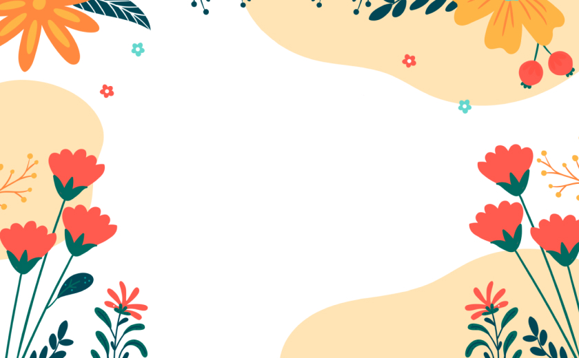

Поздравляю с днем рожденья!
Пусть будет жизнь полна веселья,
Не будет грусти и хлопот,
А только счастье круглый год!
Желаю творческих успехов,
Прекрасных дней, улыбок, смеха.
Любви, душевного тепла,
Как сказка, чтобы жизнь была!